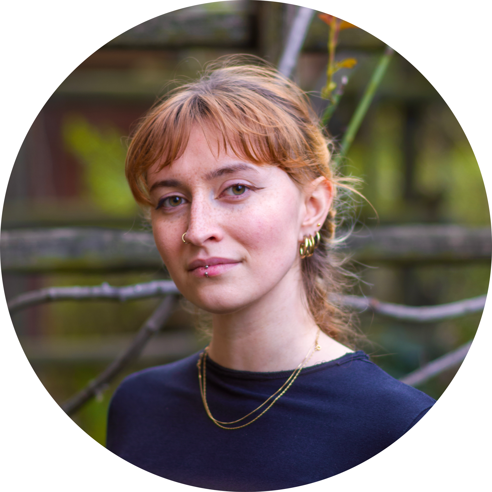

Torino・Italia
Tel・3454062515
Email・linda.chioda@gmail.com
Linkedin・Linda.Chioda.Linkedin
Github・Linda.Chioda.Github

Nascita・05-03-1999
Nazionalità・italiana
Torino・Italia
Tel・3454062515
Email・linda.chioda@gmail.com
Linkedin・Linda.Chioda.Linkedin
Github・Linda.Chioda.Github
Laurea triennale in DAMS・Università di Bologna.
Laurea magistrale in Storia dell'arte・Università di Torino.
Formazione autodidatta linguaggi e tools per la programmazione front end.
Corso Typescript-Angular con attestato di partecipazione.
Italiano・madrelingua
Inglese・C1
Spagnolo・A1
• HTML & CSS3
• Javascript
• Bootstrap & SASS
• Nodejs
• Git e Github
• Angular
Junior Front-End Developer, curiosa, organizzata e orientata alla crescita
In formazione autonoma nello sviluppo front end.
Il mio background in ambito artistico ha alimentato il mio interesse per la comunicazione visiva e la cura dei dettagli.
Sono una persona curiosa e creativa, mi piace imparare attraverso la pratica e la realizzazione di progetti personali.
A mio agio e stimolata dal lavoro in team, cerco un ambiente dinamico in cui poter applicare e approfondire le mie competenze, confrontarmi con idee differenti e continuare a crescere professionalmente.
Front-office · Gestionecassa.
Catalogazione digitale · Assistenza clienti.
Aiuto grafico · Allestimento mostra.
Organizzazione e allestimento dell'evento "Art Date" · Guida turistica alla mostra temporanea.